Tutoriel : Micro-ROS
Table des matières
- Introduction
- Création d'une communication Publisher-Subscriber sur un Topic grâce à micro-ROS sur Linux
- Création d'un Publisher sur un topic via une liaison série grâce à Micro-ROS sur un micro-processeur
- Création d'un Publisher sur un Topic via une liaison internet grâce à Micro-ROS sur un micro-processeur
- Annexes
Introduction
Ces tutoriels on pour but de montrer ce qu'est micro-ROS et de créer une première application micro-ROS.
Micro-ROS : ROS est un middleware ( un software qui se comporte comme une passerelle entre des applications et des bases de données ou des systèmes d'exploitation, aussi appelé intergiciel en français ), et ROS2 est sa nouvelle version. Elle comporte à peu près les mêmes composants, mais son architecture change fondamentalement en utilisant le protocole DDS (Data Distribution Service), qui a pour but de simplifier la programmation réseau. Micro-ROS est la version de ROS2 créée pour être utilisé directement avec des microcontrôleurs. Pour cela, quelques changements sont opérés sur son architecture. Le stack ROS2 utilisé sur les systèmes d'exploitation deviennent des agents dont le seul but est de gérer micro-ROS sur le microcontrôleur. On retrouve les RTOS (système d'exploitation en temps réel), mais avec des drivers spécifiques à micro-ROS, avec en plus le RTOS Arduino open source, qui est « Community based » et non proposé de base par micro-ROS. En plus des API ROS et des RCL (ROS Client Libraries), codés en langage C, on retrouve le RCLC qui aoute des fonctions, des exécuteurs ainsi que d'autres choses spécialement pour l'utilisation sur microcontrôleur. Pour le point de vue Middleware, le ROS Middleware Interface ne suffit plus, car il ne permet pas au microcontrôleur d'utiliser le protocole réseau DDS. Pour cela, un adaptateur DDS est ajouté, et un client avec à l'intérieur du Middleware. Le microcontrôleur ne peut donc pas assumer le rôle de serveur DDS.
RTOS : Un système d'exploitation en temps réel (RTOS) est un système d'exploitation (OS) léger, utilisé pour faciliter le fonctionnement multitâche et l'intégration des tâches dans les conceptions où les ressources et le temps sont limités, ce qui est généralement le cas dans les systèmes embarqués. En outre, le terme « temps réel » suggère la prévisibilité/le déterminisme du temps d'exécution plutôt que la vitesse brute. Ainsi, on peut généralement démontrer qu'un RTOS répond aux exigences de temps réel dur en raison de son déterminisme (source : Systèmes d'exploitation en temps réel (RTOS) et applications, DigiKey).
Création d'une communication Publisher-Subscriber sur un Topic grâce à micro-ROS sur Linux
Création d'un espace de travail micro-ROS
Pour créer l'espace de travail propre à ce tutoriel, suivez les commandes suivantes :
mkdir microros_linux_ws cd ~/microros_linux_ws git clone -b $ROS_DISTRO https://github.com/micro-ROS/micro_ros_setup.git src/micro_ros_setup
Mise à jour des dépendances avec rosdep et installation de pip
-
Mettez à jour les dépendances avec
rosdep:sudo apt update && rosdep update rosdep install --from-paths src --ignore-src -y
-
Installez
pip:sudo apt-get install python3-pip
-
Faites la mise en place de outils (packages) Micro-ROS :
colcon build
Sourcez le workspace micro-ROS :
source install/local_setup.bash
Création du firmware
Lancer un programme qui va créer le firmware du micro-ROS sur la VM Linux :
ros2 run micro_ros_setup create_firmware_ws.sh host
Le paramètre "host" signifie que nous utilisons notre ordinateur comme cible du firmware. En utilisant la commande ls, le dossier du firmware devrait être visible.
Création des fichiers de l'application pour le Publisher et le Subscriber
-
Allez dans le dossier
rclcqui contient les codes des applications micro-ROS en langage C avec la commande suivante :cd src/uros/micro-ROS-demos/rclc
-
On peut alors créer nos deux dossiers d'application avec les commandes :
mkdir Pub mkdir Sub
-
Dans chaque dossier, nous allons créer un fichier
main.cqui contiendra le code de nos application, et un fichierCMakeLists.txtqui contiendra le code permettant de compiler notre application.cd Pub touch main.c touch CMakeLists.txt cd ../Sub touch main.c touch CMakeLists.txt cd ..
-
Nous allons maintenant remplir différents les fichiers que nous avons créés. Commençons par l'application
Pub. Ouvrons le fichiermain.cqui se trouve dedans :cd Pub sudo nano main.c
Remplissez-le avec le code qui se trouve en Annexe 1. Les commentaires expliquent son fonctionnement. Sauvegardez avec
ctrl+Oet sortez du fichier avecctrl+X.On notera que le type de message n'est pas un String classique, mais un “std_msgs__msg__String”. Ce sont des types de messages définis dans la bibliothèque micro-ROS, et c'est ceux-là qu'il faut utiliser pour les messages, les types classiques causant des erreurs. Le nom des différents types disponibles se trouve dans le dossier “~/micro_pico_ws/src/micro_ros_raspberrypi_pico_sdk/libmicroros/include/std_msgs/msg/detail”
On peut alors retrouver le nom que chaque type de données possède dans son fichier structure. Par exemple, dans le fichier “bool__struct.h”, on retrouve la structure std_msgs__msg__Bool qui est le type de message à utilliser pour un booléen.
-
Occupez-vous maintenant du fichier CMakeLists.txt :
sudo nano CMakeLists.txt
Remplissez-le avec le texte en Annexe 2 afin de donner les informations complémentaires au compilateur, enregistrez-les, et quittez l'éditeur de texte. Le Publisher est maintenant codé. Occupez-vous de la même façon du Subscriber !
-
Nous allons maintenant remplir différents les fichiers que nous avons créés. Continuons avec l'application
Sub. Ouvrons le fichier main.c qui se trouve dedans :cd ../Sub sudo nano main.c
Remplissez-le avec le code qui se trouve en Annexe 3. Les commentaires expliquent son fonctionnement. Sauvegardez avec
ctrl+Oet sortez du fichier avecctrl+X. -
Occupez-vous maintenant du fichier CMakeLists.txt :
sudo nano CMakeLists.txt
Remplissez-le avec le texte en Annexe 4 afin de donner les informations complémentaires au compilateur, enregistrez-les, et quittez l'éditeur de texte. Le Subcriber est maintenant codé !
Ajout de nos deux programmes dans le registre des exécutables micro-ROS
-
Ajoutez les deux applications dans la liste des applications exécutables par micro-ROS. Pour cela, nous allons ouvrir le fichier
CMakeLists.txtdu dossierrclc. Nous pouvons retourner dans le dossierrclcavec la commande suivante :cd ..
-
Utilisez la commande suivante pour modifier le fichier
CMakelistdu répertoirerclc:sudo nano CMakeLists.txt
-
Dans ce fichier, il y a un moment une longue liste d'export de fichiers exécutables présentés comme suit :
export_executable(<App>)
-
Nous allons alors ajouter nos deux applications à la suite :
export_executable(Pub) export_executable(Sub)
-
Vous aurez donc :

Tout est alors mis en place pour que nos programmes fonctionnent et nous pouvons passer à la suite.
Mise en place du firmware
Nous allons mettre en place notre firmware afin qu'il prenne en compte nos deux nouvelles applications. Pour cela nous allons retourner dans le workspace microros_linux_ws, puis nous allons utiliser la commande pour mettre en place notre firmware. Nous allons ensuite sourcer à nouveau notre installation locale pour qu'il prenne en compte ces changements.
-
Tapez les commandes :
cd ~/microros_linux_ws ros2 run micro_ros_setup build_firmware.sh
-
Puis tapez la commande pour sourcer ce workspace :
source install/local_setup.bash
Une fois cette étape réalisée, nous pouvons passer à la création et à la mise en place de l'agent micro-ROS qui remplace le stack ROS comme expliqué dans l'introduction.
Création, mise en place et lancement d'un agent micro-ROS
-
Afin de permettre à notre application micro-ROS de communiquer avec ROS2, nous devons créer un agent qui nous servira de passerelle. Une fois cet agent créé, nous allons le mettre en place puis re-sourcer notre installation locale pour que l'agent soit pris en compte.
Tapez ces commandes à la suite dans un même terminal :
ros2 run micro_ros_setup create_agent_ws.sh
ros2 run micro_ros_setup build_agent.sh
source install/local_setup.bash
-
Une fois l'agent mis en place, nous allons pouvoir le lancer. Comme il remplace le stack, il faut le considérer comme un
roscore(serveur ROS1) pour micro-ROS, c'est-à-dire que le terminal dans lequel il sera lancé devra continuer à tourner pour que l'application micro-ROS soit fonctionnelle. Pour le lancer, il faut choisir un port de l'ordinateur sur lequel utiliser l'agent. Dans ce cas, nous allons le mettre en place sur le port 8888 qui fonctionne en UDP.La commande est alors la suivante (toujours dans le même terminal) :
ros2 run micro_ros_agent micro_ros_agent udp4 --port 8888
L'agent est alors lancé et le terminal doit ressembler à celui-ci :

Lancement du Publisher et du Subscriber
-
Notre agent mis en place, nous pouvons à présent lancer notre Publisher. Pour cela, nous allons retourner dans notre dossier
microros_linux_ws, sourcer l'installation locale et utiliser une implémentation de notre middleware semblable à celle d'un microcontrôleur connecté en DDS (Nous émulons un microcontrôleur à l'aide de notre terminal). Afin de réaliser ceci, ouvrez un nouveau terminal avecctrl+alt+Tet entrez les commandes suivantes :cd microros_linux_ws source install/local_setup.bash export RMW_IMPLEMENTATION=rmw_microxrcedds
-
Maintenant que tout est en place, nous pouvons simplement lancer notre Publisher avec une simple commande
ros2 runcomme suit :ros2 run micro_ros_demos_rclc Pub
Le programme devrait donc afficher qu'il publie « Hello Wold !!! » :

-
Nous allons ouvrir un nouveau terminal, et utiliser le même modèle que ci-dessus pour lancer notre Subscriber :
cd microros_linux_ws source install/local_setup.bash export RMW_IMPLEMENTATION=rmw_microxrcedds
-
Puis, nous allons lancer le Subscriber :
ros2 run micro_ros_demos_rclc Sub
Le Subscriber va alors commencer à recevoir les messages du Publisher, et le terminal devrait afficher ceci :

Observation du nœud et du topic avec rqt_graph
Afin de vérifier que tout fonctionne comme prévu dans nos programmes, nous voulons vérifier que les messages transitent bien par le topic My_Topic créé dans nos programmes, et connecté au nœud My_Node que nous créons auparavant dans ceci. Pour cela, nous pouvons utiliser rqt_graph simplement avec la commande :
-
Ouvrez un nouveau terminal et tapez la commande pour ouvrir
rqt_graph:rqt_graph
-
Après avoir réglé
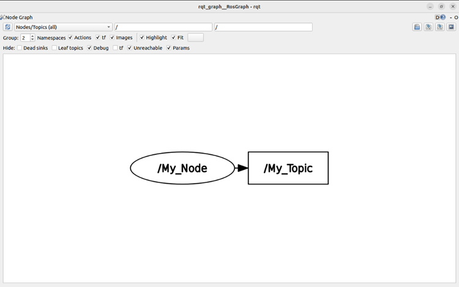rqt_graphafin de voir les nœuds et les topics (cocher et décocher les bonnes cases), nous observons bien ceci :
Cette partie de tutoriel, montrant comment créer une application micro-ROS avec une communication Publisher-Subscriber sur un Topic, est donc terminé.
Création d'un Publisher sur un Topic via une liaison série grâce à micro-ROS sur un micro-processeur.
Installation des prérequis
Commençons par l'installations de différents prérequis.
-
La commande suivante nous permet d'installer le gcc contenant les bibliothèques nécessaires à la construction de la bibliothèque micro-ROS Pico. Tapez la commande ci-dessous :
sudo apt install build-essential cmake gcc-arm-none-eabi libnewlib-arm-none-eabi doxygen git python3
-
Ajoutez les lignes indiquant où trouver la bibliothèque Pico SDK et le chemin vers la Tool Chain dans le
.bashrc. Cela nous permettra d'utiliser la bibliothèque micro-ROS sans devoir indiquer ces chemins à chaque fois :echo "export PICO_TOOLCHAIN_PATH=..." >> ~/.bashrc echo "export PICO_SDK_PATH=$HOME/microros_pico_ws/src/pico-sdk" >> ~/.bashrc
-
Sourcez le fichier
.bashrc:source ~/.bashrc
Création d'un espace de travail micro-ROS et mise à jour des installations
-
Créez un dossier
microros_pico_wsavec un sous-dossiersrc, et rentrer dedans :mkdir -p ~/microros_pico_ws/src cd ~/microros_pico_ws/src
-
Clonez la bibliothèque Pico SDK. Cette étape peut être longue, il faut donc être patient.
git clone --recurse-submodules https://github.com/raspberrypi/pico-sdk.git
-
Clonez la bibliothèque micro-ROS Pico. Cette étape peut être longue, il faut donc être patient.
git clone https://github.com/micro-ROS/micro_ros_raspberrypi_pico_sdk.git
-
Mettez à jour vos installations et votre système :
sudo apt-get update && sudo apt upgrade
Création du Publisher
Cette étape à pour but de créer un programme contenant un Publisher micro-ROS, et de l'ajouter au CMakeLists.txt pour qu'il soit compilé. Cela servira aussi à le transformer dans un format que la carte Pico pourra comprendre.
-
Rendez vous dans le répertoire
micro_ros_raspberrypi_pico_sdkpuis créez et ouvrez un fichierPub.c:cd micro_ros_raspberrypi_pico_sdk sudo nano Pub.c
-
Remplissez-le avec le texte en Annexe 5. Le code à été annoté pour plus de compréhension.
Une fois le programme ci-dessus écrit, sauvegardez-le avecctrl+Oet quittez avecctrl+X -
Modifiez le
CMakeLists.txtafin de l'ajouter. Pour cela, utilisez la commande suivante :sudo nano CMakeLists.txt
-
Modifiez ce code en ajoutant les lignes encadrées en rouge dans les images ci-dessous :
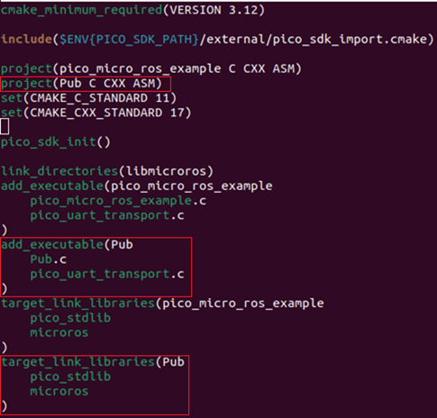 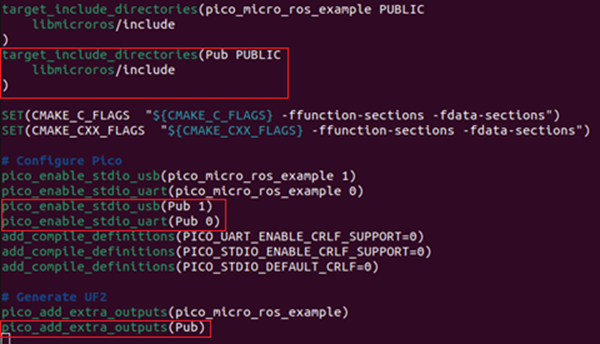Sauvegardez avec
ctrl+Oet quittez avecctrl+XVoici une explication détaillée de ce que font ces lignes que nous avons ajouté, dans l'ordre d'apparition des carrées rouges :
Nous commençons par créer un nouveau projet, en précisant que les fichiers de ce projet auront comme langages de programmation le C, le C++ et l'assembleur.
Ensuite, nous indiquons que notre projet contient deux fichiers exécutables : Notre programme en C, et le fichier pico_uart_transport.c qui est le programme permettant à la carte Pico de communiquer via le port série.
Par la suite, nous ajoutons les différentes bibliothèques dont nous allons nous servir, ici microros qui contient les fonctions et les types nécessaires à l'utilisation de micro-ROS, et pico_stdlib qui est la version de stdlib pour une carte Pico. Stdlib est l'ensemble des bibliothèques standards, contenant les types de base tel que les entier, les chaines de caractères, etc.
On indique ensuite où notre projet va chercher les différents fichiers qu'on inclut, ici dans le dossier libmicroros et le sous-dossier include.
On indique que lors de la mise sur carte du projet le port USB doit se fermer et le port UART doit s'ouvrir.
On crée un fichier UF2 (les fichiers de programmation pour la carte Pico), qui est l'image du projet, et qui sera enregistré dans le dossier « build ».
Construction du répertoire micro_ros_raspberry_pico_sdk
-
Créez le sous-répertoire
build:mkdir build cd build
-
Créez le sous-répertoire
buildet build notre workspace :mkdir build cd build cmake .. make
-
Vérifiez que notre fichier Pub.uf2 qui est notre programme pour la carte Pico s'y trouve bien. Tapez la commande :
ls
Vous devriez avoir :
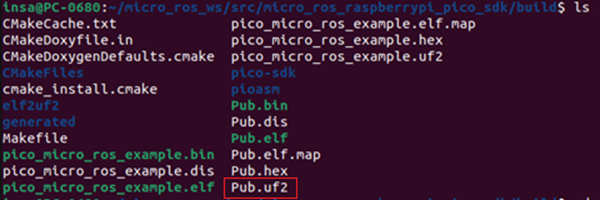Si le fichier y est bien, on peut retourner dans le dossier
micro_ros_raspberrypi_pico_sdkavec la commande :cd ..
-
Branchez la carte à l'ordinateur en maintenant le bouton BOOTSEL pour programmer notre carte Pico.Ensuite, nous devons lui envoyer le fichier
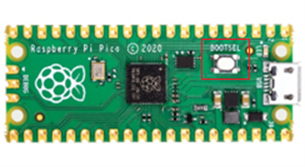Pub.uf2en tapant la commande :cp build/Pub.uf2 /media/$USER/RPI-RP2
Il faut vérifier que la carte disparait bien de la liste des appareils de stockage connectés. Cela signifirait que la programmation à bien réussie.
Installation et configuration du module micro-ros-agent de snap
Requis :
snap.
Si l'ordinateur sur lequel vous êtes possède une version de Ubuntu supérieure à la 20.04, snap doit déjà être installé dessus. Sinon, référez-vous à ce lien.-
Utiliser les commandes suivantes pour installer le module, le configurer et redémarrer snap pour appliquer les changements :
sudo snap install micro-ros-agent sudo snap set core experimental.hotplug=true sudo systemctl restart snapd
Vérification de la présence de la carte Pico et connexion via le port série
-
Tapez la commande suivante :
snap interface serial-port
Vérifiez que vous obtenez ceci :
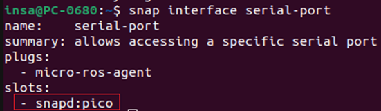 -
Connectez vous alors à la carte Pico :
snap connect micro-ros-agent:serial-port snapd:pico
Si le slots porte un autre nom, pensez à changer celui-ci dans la commande ci-dessus !
Lancement du Publisher sur la carte Pico et vérifications
-
Lancez le programme. Il suffit alors de lancer l'agent sur le port de la carte Pico avec le bon baudrate :
sudo micro-ros-agent serial --dev /dev/ttyACM0 baudrate=115200
La LED devrait alors s'allumer sur la carte Pico, indiquant que le programme tourne bien.
Si ce n'est pas le cas, débranchez et rebranchez la carte Pico avant de recommencer, cela est probablement dû au Timeout que nous avons rédigé dans le programme (Si il n'y a pas de connexion pendant 2 min après la mise sous tension de la carte Pico, le programme arrête de tourner). -
Vous devriez alors observer les messages suivants :
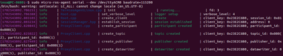 -
Vérifiez la présence du topic avec la commande suivante
ros2 topic list
-
Vous devriez alors obtenir :
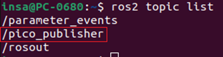 -
Récupérez alors les messages qui sont envoyés sur le topic :
ros2 topic echo /pico_publisher
-
Vous devriez alors obtenir :
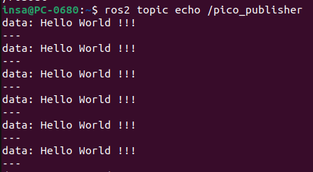 -
Observez les détails grâce à
rqt_graph:rqt_graph
-
Vous devriez alors obtenir :
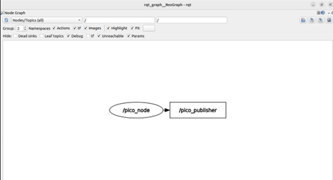
Création d'un Publisher sur un Topic via une liaison série grâce à micro-ROS sur un micro-processeur.
Maintenant que nous avons réussi à mettre en place un Publisher via une liaison série nous allons essayer de faire la même chose, mais avec une liaison internet, et plus précisément, avec de l'udp4.
Pour cela, nous allons avoir besoin d'une carte spécifique avec un module wifi : la carte Raspberry Pi Pico W.
Voici une carte Raspberry Pi Pico W :
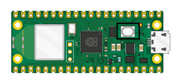La différence entre cette carte et la carte Pico est la présence d'un module wifi qui se rajoute pour la Pico W.
Installation des prérequis
-
Retourner dans le workspace :
cd ~/microros_pico_ws/src/micro_ros_raspberrypi_pico_sdk
-
Vérifiez que vous pouvez voir les fichiers
pico_uart_transport.cetpico_uart_transport.havec la commande :ls
Vous devriez alors obtenir :
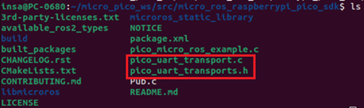Ces deux fichiers sont ceux qui permettent à notre carte Pico de communiquer avec l'ordinateur via une liaison série. Afin de pouvoir faire la même chose pour le wifi, nous allons devoir en récupérer deux nouveaux :
pico_wifi_transport.cetpico_wifi_transport.h.La création de ces deux fichiers avec les différents paramètres à fournir et les méthodes à créer serait très compliqué. Heureusement, une personne a déjà réussi à mettre en place une communication wifi avec une carte Pico W avec micro-ROS, même si son application consiste à faire bouger un robot. Son github est le suivant : https://github.com/PICO-MAZING/micro_ros_raspberrypi_pico_sdk/tree/humble. Nous n'avons cependant pas besoin de tous ces fichiers, mais il a notamment créé les deux fichiers qu'il nous faut, et un troisième fichier qui permet le fonctionement de ceux-ci : lwipopts.h qui est une bibliothèque contenant les options du LWIP, une petite implémentation du protocole TCP/IP.
Le fichier
pico_wifi_transport.ccontient les différentes fonctions qui vont nous permettre de gérer les connexions wifi, alors quepico_wifi_transport.hcontient la méthode permettant de se connecter à un réseau wifi via un protocole udp4. -
Créez les 3 fichiers
pico_wifi_transport.c,pico_wifi_transport.hetlwipopts.h:touch pico_wifi_transport.c pico_wifi_transport.h lwipopts.h
-
Ouvrez le fichier
pico_wifi_transport.csudo nano pico_wifi_transport.c
Remplissez-le avec le texte en Annexe 6. Le code à été annoté pour plus de compréhension.
Une fois le programme ci-dessus écrit, sauvegardez-le avecctrl+Oet quittez avecctrl+X -
Ouvrez le fichier
pico_wifi_transport.h:sudo nano pico_wifi_transport.h
Remplissez-le avec le texte en Annexe 7. Le code à été annoté pour plus de compréhension.
Une fois le programme ci-dessus écrit, sauvegardez-le avecctrl+Oet quittez avecctrl+X -
Ouvrez le fichier
pico_wifi_transport.c:sudo nano lwipopts.h
Remplissez-le avec le texte en Annexe 8. Le code à été annoté pour plus de compréhension.
Une fois le programme ci-dessus écrit, sauvegardez-le avecctrl+Oet quittez avecctrl+X
Création du Publisher
Maintenant que nous avons tous les fichiers nécessaires, nous allons créer notre programme. Ce code est très similaire à celui créé précédemment, la seule différence étant la connexion à l'agent ainsi que les noms des nœuds et Publisher.
-
Ouvrez le fichier
pico_wifi_transport.c:sudo nano Pub_wifi.c
Remplissez-le avec le texte en Annexe 9. Le code à été annoté pour plus de compréhension.
N'oubliez pas de remplacer, à la ligne suivante, le
SSIDpar le nom du réseau wifi,PWDpar le mot de passe de ce réseau, etIPpar l'adresse IP de l'ordinateur auquel vous voulez vous connecte :set_microros_wifi_transports("SSID", "PWD", "IP", 4444); // connexion à un réseau wifiUne fois le programme ci-dessus écrit et modifié, sauvegardez-le avec
ctrl+Oet quittez avecctrl+X -
Ouvrez le fichier
CMakeLists.txt:sudo nano CMakeLists.txt
-
Modifiez ce code en ajoutant les lignes encadrées en rouge dans les images ci-dessous :
-
On précise que nous avons une carte Pico W et on définit notre nouveau projet :
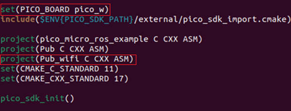 -
On ajoute les deux fichiers exécutables dans notre projet :
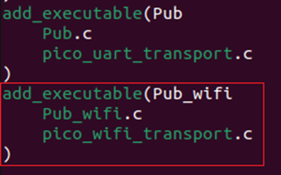 -
On ajoute nos deux bibliothèques :
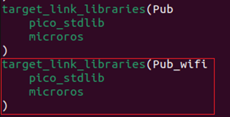 -
On lui indique où trouver les fichiers
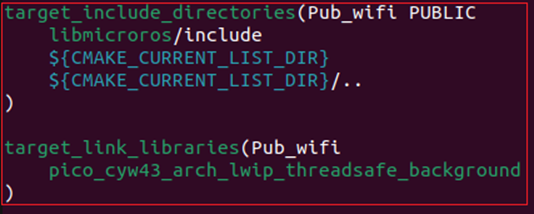include, en ajoutant le répertoire de base et son parent pour ajouter nos nouveaux fichiers.het on rajoute le module wifi à la liste des bibliothèques. -
On lui demande de fermer les ports UART et USB, et on crée le fichier uf2 pour programmer la carte Pico W.
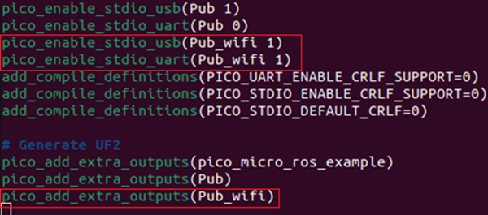
Sauvegardez avec
ctrl+Oet quittez avecctrl+X -
Construction du répertoire micro_ros_raspberry_pico_sdk
-
Retournez dans le dossier
buildet recommencer notre construction de workspace : :cd build cmake .. make
-
De nouveaux fichiers doivent être apparus, dont notre
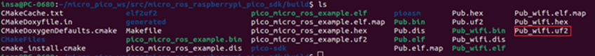Pub_wifi.uf2: -
Retournez dans le dossier parent :
cd ..
-
Branchez la carte à l'ordinateur en maintenant le bouton BOOTSEL pour programmer notre carte Pico.Ensuite, nous devons lui envoyer le fichier
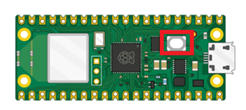Pub.uf2en tapant la commande :cp build/Pub_wifi.uf2 /media/$USER/RPI-RP2
Il faut vérifier que la carte disparait bien de la liste des appareils de stockage connectés. Cela signifirait que la programmation à bien réussie.
Vous devriez normalement voir apparaître un appareil sur votre réseau wifi. Si ce n'est pas le cas, débranchez et rebranchez la carte Pico W.
Lancement du Publisher sur la carte Pico W et vérifications
-
Lancez le client, une fois la carte connectée au réseau Wifi :
micro-ros-agent udp4 --port 4444
-
Vous devriez obtenir :
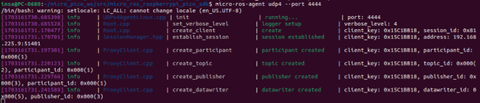 -
utilisez la commande
ros2 topic listpour observer les différents topics, vous devriez normalement voir :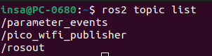ros2 topic list
-
Regardez les messages envoyés dessus :
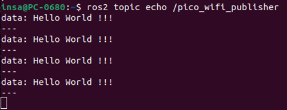ros2 topic echo /pico_wifi_publisher
-
Regardez avec
rqt_graphla réprésentation de la structure de ce système Publisher :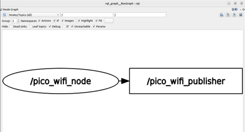rqt_graph
Ceci conclut notre tutoriel sur l'utilisation de micro-ROS sur un microcontrôleur, et plus particulièrement une carte Raspberry Pi Pico et Pico W.
Annexes
Annexe 1 : Code C++ du Publisher
Revenez au bon endroit dans le tuto !
//Installation des bibliotheques
#include <rcl/rcl.h>
#include <rcl/error_handling.h>
#include <rclc/rclc.h>
#include <rclc/executor.h>
//Bibliotheques de gestion des API en C
#include <std_msgs/msg/string.h>
//Bibliotheque de String
#include <stdio.h>
#include <unistd.h>
//Bibliotheques de gestion des I/O
//On définit une variable ARRAY_LEN qui sera la taille maimale
// de notre STRING
#define ARRAY_LEN 200
//On définit nos fonctions RCCHECK et RCSOFTCHECK qui ont pour
// objectif de gérer les avertissements et les erreurs
#define RCCHECK(fn) { rcl_ret_t temp_rc = fn; if((temp_rc != RCL_RET_OK)){printf("Failed status on line %d: %d. Aborting.\n",__LINE__,(int)temp_rc); return 1;}}
#define RCSOFTCHECK(fn) { rcl_ret_t temp_rc = fn; if((temp_rc != RCL_RET_OK)){printf("Failed status on line %d: %d. Continuing.\n",__LINE__,(int)temp_rc);}}
//Initialisation du publisher et du message
rcl_publisher_t publisher;
std_msgs__msg__String msg;
//Fonction chargeant "Hello World !!!" dans notre message à chaque
//tic d'un timer, le publiant sur le publisher et affichant que
//le message a été publié dans le terminal
void timer_callback(rcl_timer_t * timer, int64_t last_call_time)
{
(void) last_call_time;
if (timer != NULL) {
sprintf(msg.data.data, "Hello World !!!");
msg.data.size = strlen(msg.data.data);
RCSOFTCHECK(rcl_publish(&publisher, &msg, NULL));
printf("Publie : \"%s\"\n", msg.data.data);
}
}
//Fonction principale qui se lance lorce qu'on appelle le programme
int main(int argc, const char * const * argv)
{
//Création de l'allocateur qui gère la mémoire dynamique
//allouée au programme
rcl_allocator_t allocator = rcl_get_default_allocator();
//Création du support qui va créer le client micro-ros et
//gérer les données
rclc_support_t support;
//Création des options d'initialisations
RCCHECK(rclc_support_init(&support, argc, argv, &allocator));
//Création d'un noeud micro-ros
rcl_node_t node;
RCCHECK(rclc_node_init_default(&node, "My_Node", "", &support));
//Création du Publisher sur le topic My_Topic
RCCHECK(rclc_publisher_init_default(
&publisher,
&node,
ROSIDL_GET_MSG_TYPE_SUPPORT(std_msgs, msg, String),
"/My_Topic"));
//Création du timer auquel on va ajouter la fonction que
//nous avons défini plus haut
rcl_timer_t timer;
const unsigned int timer_timeout = 1000;
RCCHECK(rclc_timer_init_default(
&timer,
&support,
RCL_MS_TO_NS(timer_timeout),
timer_callback));
//Création de l'executeur qui est un API gérant les timers et les
//souscription à des topics
rclc_executor_t executor = rclc_executor_get_zero_initialized_executor();
RCCHECK(rclc_executor_init(&executor, &support.context, 1, &allocator));
RCCHECK(rclc_executor_add_timer(&executor, &timer));
//On initialise notre message
msg.data.data = (char * ) malloc(ARRAY_LEN * sizeof(char));
msg.data.size = 0;
msg.data.capacity = ARRAY_LEN;
//On lance notre executeur
rclc_executor_spin(&executor);
//On assigne notre publisher à notre noeud, et on lance notre
//noeud
RCCHECK(rcl_publisher_fini(&publisher, &node))
RCCHECK(rcl_node_fini(&node))
}
Annexe 2 : Code CMakelist pour le Subscriber
Revenez au bon endroit dans le tuto !
cmake_minimum_required(VERSION 3.5)
project(Pub LANGUAGES C)
find_package(ament_cmake REQUIRED)
find_package(rcl REQUIRED)
find_package(rclc REQUIRED)
find_package(std_msgs REQUIRED)
find_package(rmw_microxrcedds REQUIRED)
add_executable(${PROJECT_NAME} main.c)
ament_target_dependencies(${PROJECT_NAME}
rcl
rclc
std_msgs
rmw_microxrcedds
)
install(TARGETS ${PROJECT_NAME}
DESTINATION ${PROJECT_NAME}
)
Annexe 3 : Code C++ du Subscriber
Revenez au bon endroit dans le tuto !
[frame=single,framesep=1.5mm,bgcolor=gray!10]{c}
//Installation des bibliothèques
#include <rcl/rcl.h>
#include <rcl/error_handling.h>
#include <rclc/rclc.h>
#include <rclc/executor.h>
//Bibliothèque de gestion des API en c
#include <std_msgs/msg/string.h>
//Bibliothèque de String
#include <stdio.h>
//Bibliothèque de gestion des IO
//On définit une variable ARRAY_LEN qui sera la taille maimale
// de notre STRING
#define ARRAY_LEN 200
//On définit nos fonctions RCCHECK et RCSOFTCHECK qui ont pour
// objectif de gérer les avertissements et les erreurs
#define RCCHECK(fn) { rcl_ret_t temp_rc = fn; if((temp_rc != RCL_RET_OK)){printf("Failed status on line %d: %d. Aborting.\n",__LINE__,(int)temp_rc); return 1;}}
#define RCSOFTCHECK(fn) { rcl_ret_t temp_rc = fn; if((temp_rc != RCL_RET_OK)){printf("Failed status on line %d: %d. Continuing.\n",__LINE__,(int)temp_rc);}}
//Initialisation du publisher, du message et d'un vecteur de taille
// ARRAY_LEN de aractères
rcl_subscription_t subscriber;
std_msgs__msg__String msg;
char test_array[ARRAY_LEN];
//Fonction gérant la réception des messages par le Subscriber en
// affichant le message contenu dedans
void subscription_callback(const void * msgin)
{
const std_msgs__msg__String * msg = (const std_msgs__msg__String *)msgin;
printf("Recu : \"%s\"\n", msg->data.data);
}
//Fonction principale qui se lance lorce qu'on appelle le programme
int main(int argc, const char * const * argv)
{
//Initialisation du vecteur de caractères
memset(test_array,'z',ARRAY_LEN);
//Création de l'allocateur qui gère la mémoire dynamique
//allouée au programme
rcl_allocator_t allocator = rcl_get_default_allocator();
//Création du support qui va créer le client micro-ros et
//gérer les données
rclc_support_t support;
//Création des options d'initialisations
RCCHECK(rclc_support_init(&support, argc, argv, &allocator));
//Création d'un noeud micro-ros
rcl_node_t node;
RCCHECK(rclc_node_init_default(&node, "My_Node", "", &support));
//Création du Subscriber sur le topic My_Topic
RCCHECK(rclc_subscription_init_default(
&subscriber,
&node,
ROSIDL_GET_MSG_TYPE_SUPPORT(std_msgs, msg, String),
"/My_Topic"));
//Création de l'executeur qui est un API gérant les timers et les
//souscription à des topics
rclc_executor_t executor = rclc_executor_get_zero_initialized_executor();
RCCHECK(rclc_executor_init(&executor, &support.context, 1, &allocator));
RCCHECK(rclc_executor_add_subscription(&executor, &subscriber, &msg, &subscription_callback, ON_NEW_DATA));
//On initialise notre message
msg.data.data = (char * ) malloc(ARRAY_LEN * sizeof(char));
msg.data.size = 0;
msg.data.capacity = ARRAY_LEN;
//On lance notre executeur
rclc_executor_spin(&executor);
//On assigne notre subscriber à notre noeud, et on lance notre
//noeud
RCCHECK(rcl_subscription_fini(&subscriber, &node));
RCCHECK(rcl_node_fini(&node));
}
Annexe 4 : Code Cmakelist pour le Subscriber
Revenez au bon endroit dans le tuto !
cmake_minimum_required(VERSION 3.5)
project(Sub LANGUAGES C)
find_package(ament_cmake REQUIRED)
find_package(rcl REQUIRED)
find_package(rclc REQUIRED)
find_package(std_msgs REQUIRED)
find_package(rmw_microxrcedds REQUIRED)
add_executable(${PROJECT_NAME} main.c)
ament_target_dependencies(${PROJECT_NAME}
rcl
rclc
std_msgs
rmw_microxrcedds
)
install(TARGETS ${PROJECT_NAME}
DESTINATION ${PROJECT_NAME}
)
Annexe 5 : Code pour le Publisher (communication série)
Revenez au bon endroit dans le tuto !
//Installation des bibliothèques
#include <stdio.h>
#include <unistd.h>
//Bibliothèque permettant de gérer les entrées sorties
#include <rcl/rcl.h>
#include <rcl/error_handling.h>
#include <rclc/rclc.h>
#include <rclc/executor.h>
//Bibliothèques de gestion des API en C
#include <std_msgs/msg/string.h>
#include <rmw_microros/rmw_microros.h>
//Bibliotheque de String
#include "pico/stdlib.h"
#include "pico_uart_transports.h"
//Bibliothèque propre à la carte Pico pour le transport UART et les formats de messages
//On définit une variable LED_PIN qui est le pin de la led de la carte Pico.
const uint LED_PIN = 25;
//On définit une variable ARRAY_LEN qui sera la taille maimale
// de notre STRING
#define ARRAY_LEN 200
//Initialisation du publisher et du message
rcl_publisher_t publisher;
std_msgs__msg__String msg;
//On crée notre boucle callback qui va se lancer à chaque tic de notre timer ( on envoie alors notre message)
void timer_callback(rcl_timer_t *timer, int64_t last_call_time)
{
sprintf(msg.data.data, "Hello World !!!");
msg.data.size = strlen(msg.data.data);
rcl_ret_t ret = rcl_publish(&publisher, &msg, NULL);
}
//Fonction principale qui se lance automatiquement lors de l'alimentation de la carte Pico.
int main()
{
//On crée une communication UROS avec le port série de la carte Pico.
rmw_uros_set_custom_transport(
true,
NULL,
pico_serial_transport_open,
pico_serial_transport_close,
pico_serial_transport_write,
pico_serial_transport_read
);
//on définit la led comme une sortie pour pouvoir l'allumer.
gpio_init(LED_PIN);
gpio_set_dir(LED_PIN, GPIO_OUT);
//Création des différents élèments de notre Publisher
rcl_timer_t timer;
rcl_node_t node;
rcl_allocator_t allocator;
rclc_support_t support;
rclc_executor_t executor;
//Création de l'allocateur qui gère la mémoire dynamique
//allouée au programme
allocator = rcl_get_default_allocator();
// On essaie pendant 2 minutes après la connexion à l'ordinateur de .se connecter à un agen micro-ROS.
const int timeout_ms = 1000;
const uint8_t attempts = 120;
rcl_ret_t ret = rmw_uros_ping_agent(timeout_ms, attempts);
if (ret != RCL_RET_OK)
{
// Si on arrive pas à atteindre l'agent au bout de 2 minutes, on arrête le programme.
return ret;
}
//Création du support qui va créer le client micro-ros et
//gérer les données
rclc_support_init(&support, 0, NULL, &allocator);
//Création d'un noeud micro-ROS.
rclc_node_init_default(&node, "pico_node", "", &support);
//Création du Publisher sur le topic pico_publisher
rclc_publisher_init_default(
&publisher,
&node,
ROSIDL_GET_MSG_TYPE_SUPPORT(std_msgs, msg, String),
"pico_publisher");
//Création du timer auquel on va ajouter la fonction que
//nous avons défini plus haut
rclc_timer_init_default(
&timer,
&support,
RCL_MS_TO_NS(1000),
timer_callback);
//Création de l'executeur qui est un API gérant les timers et les
//souscription à des topics
rclc_executor_init(&executor, &support.context, 1, &allocator);
rclc_executor_add_timer(&executor, &timer);
//On allume la led pour indiquer que le programme tourne bien
gpio_put(LED_PIN, 1);
//On initialise notre message
msg.data.data = (char * ) malloc(ARRAY_LEN * sizeof(char));
msg.data.size = 0;
msg.data.capacity = ARRAY_LEN;
while (true)
{
//On lance une boucle infinie dans laquelle on met notre exécuteur
rclc_executor_spin_some(&executor, RCL_MS_TO_NS(100));
}
return 0;
}
Annexe 6 : Code pico_wifi_transport.c (communication wifi)
Revenez au bon endroit dans le tuto !
#include <stdio.h>
#include <string.h>
#include <stdlib.h>
#include "pico/stdlib.h"
#include "pico/cyw43_arch.h"
#include "lwip/pbuf.h"
#include "lwip/udp.h"
#include <uxr/client/profile/transport/custom/custom_transport.h>
struct micro_ros_agent_locator
{
ip_addr_t address;
int port;
};
struct transport_buffer
{
uint8_t *buf;
bool packet_received;
};
void usleep(uint64_t us)
{
sleep_us(us);
}
int clock_gettime(clockid_t unused, struct timespec *tp)
{
uint64_t m = time_us_64();
tp->tv_sec = m / 1000000;
tp->tv_nsec = (m % 1000000) * 1000;
return 0;
}
static struct udp_pcb *pcb;
bool pico_wifi_transport_open(struct uxrCustomTransport *transport)
{
struct micro_ros_agent_locator *locator = (struct micro_ros_agent_locator *)transport->args;
pcb = udp_new();
err_t bind_error = udp_bind(pcb, IP_ADDR_ANY, locator->port);
bind_error = udp_connect(pcb, &locator->address, locator->port);
return bind_error == ERR_OK;
}
bool pico_wifi_transport_close(struct uxrCustomTransport *transport)
{
udp_disconnect(pcb);
return true;
}
size_t pico_wifi_transport_write(struct uxrCustomTransport *transport, const uint8_t *buf, size_t len, uint8_t *errcode)
{
struct micro_ros_agent_locator *locator = (struct micro_ros_agent_locator *)transport->args;
struct pbuf *p = pbuf_alloc(PBUF_TRANSPORT, len, PBUF_RAM);
memcpy(p->payload, buf, p->len);
err_t er = udp_send(pcb, p);
pbuf_free(p);
if (er != ERR_OK)
{
printf("Writing error");
return 0;
}
return len;
}
static void udp_recv_callback(void *arg, struct udp_pcb *pcb,
struct pbuf *p, const ip_addr_t *addr, u16_t port)
{
struct transport_buffer *transport_buffer = (struct transport_buffer *)arg;
memcpy(transport_buffer->buf, p->payload, p->len);
pbuf_free(p);
transport_buffer->packet_received = true;
}
size_t pico_wifi_transport_read(struct uxrCustomTransport *transport, uint8_t *buf, size_t len, int timeout, uint8_t *errcode)
{
(void)errcode;
struct transport_buffer transport_buffer = {buf, false};
uint64_t start_time_us = time_us_64();
int64_t elapsed_time_us = timeout * 1000 - (time_us_64() - start_time_us);
while (!transport_buffer.packet_received && elapsed_time_us > 0)
{
udp_recv(pcb, udp_recv_callback, &transport_buffer);
sleep_ms(1);
elapsed_time_us = timeout * 1000 - (time_us_64() - start_time_us);
}
return (elapsed_time_us < 0) ? 0 : len;
}
Annexe 7 : Code pico_wifi_transport.h (communication wifi)
Revenez au bon endroit dans le tuto !
#ifndef MICRO_ROS_PICOSDK
#define MICRO_ROS_PICOSDK
#include <stdio.h>
#include <stdint.h>
#include <string.h>
#include <stdlib.h>
#include "pico/stdlib.h"
#include "pico/cyw43_arch.h"
#include "lwip/pbuf.h"
#include "lwip/udp.h"
#include <uxr/client/profile/transport/custom/custom_transport.h>
bool pico_wifi_transport_open(struct uxrCustomTransport *transport);
bool pico_wifi_transport_close(struct uxrCustomTransport *transport);
size_t pico_wifi_transport_write(struct uxrCustomTransport *transport, const uint8_t *buf, size_t len, uint8_t *err);
size_t pico_wifi_transport_read(struct uxrCustomTransport *transport, uint8_t *buf, size_t len, int timeout, uint8_t *err);
struct micro_ros_agent_locator
{
ip_addr_t address;
int port;
};
static inline bool set_microros_wifi_transports(char *ssid, char *pass, char *agent_ip, uint agent_port)
{
stdio_init_all();
if (cyw43_arch_init())
{
printf("failed to initialise\n");
return 1;
}
cyw43_arch_enable_sta_mode();
sleep_ms(1000);
printf("Connecting to Wi-Fi...\n");
if (cyw43_arch_wifi_connect_timeout_ms(ssid, pass, CYW43_AUTH_WPA2_AES_PSK, 20000))
{
printf("failed to connect.\n");
return 1;
}
else
{
printf("Connected.\n");
}
static struct micro_ros_agent_locator locator;
ipaddr_aton(agent_ip, &locator.address);
locator.port = agent_port;
rmw_uros_set_custom_transport(
false,
(void *)&locator,
pico_wifi_transport_open,
pico_wifi_transport_close,
pico_wifi_transport_write,
pico_wifi_transport_read);
return 0;
}
#endif // MICRO_ROS_PICOSDK
Annexe 8 : Code lwipopts.h (communication wifi)
Revenez au bon endroit dans le tuto !
#ifndef __LWIPOPTS_H__
#define __LWIPOPTS_H__
// Common settings used in most of the pico_w examples
// (see https://www.nongnu.org/lwip/2_1_x/group__lwip__opts.html for details)
// allow override in some examples
#ifndef NO_SYS
#define NO_SYS 1
#endif
// allow override in some examples
#ifndef LWIP_SOCKET
#define LWIP_SOCKET 0
#endif
#if PICO_CYW43_ARCH_POLL
#define MEM_LIBC_MALLOC 1
#else
// MEM_LIBC_MALLOC is incompatible with non polling versions
#define MEM_LIBC_MALLOC 0
#endif
#define MEM_ALIGNMENT 4
#define MEM_SIZE 4000
#define MEMP_NUM_TCP_SEG 32
#define MEMP_NUM_ARP_QUEUE 10
#define PBUF_POOL_SIZE 24
#define LWIP_ARP 1
#define LWIP_ETHERNET 1
#define LWIP_ICMP 1
#define LWIP_RAW 1
#define TCP_WND (8 * TCP_MSS)
#define TCP_MSS 1460
#define TCP_SND_BUF (8 * TCP_MSS)
#define TCP_SND_QUEUELEN ((4 * (TCP_SND_BUF) + (TCP_MSS - 1)) / (TCP_MSS))
#define LWIP_NETIF_STATUS_CALLBACK 1
#define LWIP_NETIF_LINK_CALLBACK 1
#define LWIP_NETIF_HOSTNAME 1
#define LWIP_NETCONN 0
#define MEM_STATS 0
#define SYS_STATS 0
#define MEMP_STATS 0
#define LINK_STATS 0
// #define ETH_PAD_SIZE 2
#define LWIP_CHKSUM_ALGORITHM 3
#define LWIP_DHCP 1
#define LWIP_IPV4 1
#define LWIP_TCP 1
#define LWIP_UDP 1
#define LWIP_DNS 1
#define LWIP_TCP_KEEPALIVE 1
#define LWIP_NETIF_TX_SINGLE_PBUF 1
#define DHCP_DOES_ARP_CHECK 0
#define LWIP_DHCP_DOES_ACD_CHECK 0
#ifndef NDEBUG
#define LWIP_DEBUG 1
#define LWIP_STATS 1
#define LWIP_STATS_DISPLAY 1
#endif
#define ETHARP_DEBUG LWIP_DBG_OFF
#define NETIF_DEBUG LWIP_DBG_OFF
#define PBUF_DEBUG LWIP_DBG_OFF
#define API_LIB_DEBUG LWIP_DBG_OFF
#define API_MSG_DEBUG LWIP_DBG_OFF
#define SOCKETS_DEBUG LWIP_DBG_OFF
#define ICMP_DEBUG LWIP_DBG_OFF
#define INET_DEBUG LWIP_DBG_OFF
#define IP_DEBUG LWIP_DBG_OFF
#define IP_REASS_DEBUG LWIP_DBG_OFF
#define RAW_DEBUG LWIP_DBG_OFF
#define MEM_DEBUG LWIP_DBG_OFF
#define MEMP_DEBUG LWIP_DBG_OFF
#define SYS_DEBUG LWIP_DBG_OFF
#define TCP_DEBUG LWIP_DBG_OFF
#define TCP_INPUT_DEBUG LWIP_DBG_OFF
#define TCP_OUTPUT_DEBUG LWIP_DBG_OFF
#define TCP_RTO_DEBUG LWIP_DBG_OFF
#define TCP_CWND_DEBUG LWIP_DBG_OFF
#define TCP_WND_DEBUG LWIP_DBG_OFF
#define TCP_FR_DEBUG LWIP_DBG_OFF
#define TCP_QLEN_DEBUG LWIP_DBG_OFF
#define TCP_RST_DEBUG LWIP_DBG_OFF
#define UDP_DEBUG LWIP_DBG_OFF
#define TCPIP_DEBUG LWIP_DBG_OFF
#define PPP_DEBUG LWIP_DBG_OFF
#define SLIP_DEBUG LWIP_DBG_OFF
#define DHCP_DEBUG LWIP_DBG_OFF
#endif /* __LWIPOPTS_H__ */
Annexe 9 : Code Pub_wifi.c (communication wifi)
Revenez au bon endroit dans le tuto !
//Installation des bibliothèques
#include <stdio.h>
#include <unistd.h>
//Bibliothèque permettant de gérer les entrées sorties
#include <rcl/rcl.h>
#include <rcl/error_handling.h>
#include <rclc/rclc.h>
#include <rclc/executor.h>
//Bibliothèques de gestion des API en C
#include <std_msgs/msg/string.h>
#include <rmw_microros/rmw_microros.h>
//Bibliotheque de String
#include "pico/stdlib.h"
#include "pico_wifi_transport.h"
//Bibliothèque propre à la carte Pico pour le transport UART et les formats de messages
//On définit une variable LED_PIN qui est le pin de la led de la carte Pico.
const uint LED_PIN = 25;
//On définit une variable ARRAY_LEN qui sera la taille maimale
// de notre STRING
#define ARRAY_LEN 200
//Initialisation du publisher et du message
rcl_publisher_t publisher;
std_msgs__msg__String msg;
//On crée notre boucle callback qui va se lancer à chaque tic de notre timer ( on envoie alors notre message)
void timer_callback(rcl_timer_t *timer, int64_t last_call_time)
{
sprintf(msg.data.data, "Hello World !!!");
msg.data.size = strlen(msg.data.data);
rcl_ret_t ret = rcl_publish(&publisher, &msg, NULL);
}
//Fonction principale qui se lance automatiquement lors de l'alimentation de la carte Pico.
int main()
{
//On crée une communication WIFI avec le port 4444 de l'ordinateur via un réseau mobile.
set_microros_wifi_transports("SSID", "PWD", "IP", 4444); // connexion à un réseau wifi
//on définit la led comme une sortie pour pouvoir l‘allumer.
gpio_init(LED_PIN);
gpio_set_dir(LED_PIN, GPIO_OUT);
//Création des différents élèments de notre Publisher
rcl_timer_t timer;
rcl_node_t node;
rcl_allocator_t allocator;
rclc_support_t support;
rclc_executor_t executor;
//Création de l'allocateur qui gère la mémoire dynamique
//allouée au programme
allocator = rcl_get_default_allocator();
// On essaie pendant 2 minutes après la connexion à l'ordinateur de .se connecter à un agen micro-ROS.
const int timeout_ms = 1000;
const uint8_t attempts = 120;
rcl_ret_t ret = rmw_uros_ping_agent(timeout_ms, attempts);
if (ret != RCL_RET_OK)
{
// Si on arrive pas à atteindre l'agent au bout de 2 minutes, on arrête le programme.
return ret;
}
//Création du support qui va créer le client micro-ros et
//gérer les données
rclc_support_init(&support, 0, NULL, &allocator);
//Création d'un noeud micro-ROS.
rclc_node_init_default(&node, "pico_wifi_node", "", &support);
//Création du Publisher sur le topic pico_publisher
rclc_publisher_init_default(
&publisher,
&node,
ROSIDL_GET_MSG_TYPE_SUPPORT(std_msgs, msg, String),
"pico_wifi_publisher");
//Création du timer auquel on va ajouter la fonction que
//nous avons défini plus haut
rclc_timer_init_default(
&timer,
&support,
RCL_MS_TO_NS(1000),
timer_callback);
//Création de l'executeur qui est un API gérant les timers et les
//souscription à des topics
rclc_executor_init(&executor, &support.context, 1, &allocator);
rclc_executor_add_timer(&executor, &timer);
//On allume la led pour indiquer que le programme tourne bien
gpio_put(LED_PIN, 1);
//On initialise notre message
msg.data.data = (char * ) malloc(ARRAY_LEN * sizeof(char));
msg.data.size = 0;
msg.data.capacity = ARRAY_LEN;
while (true)
{
//On lance une boucle infinie dans laquelle on met notre exécuteur
rclc_executor_spin_some(&executor, RCL_MS_TO_NS(100));
}
return 0;
}